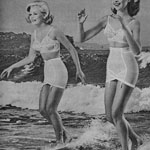
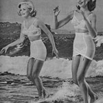
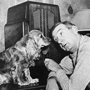
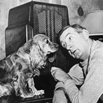

Welcome to WVVY. We are a fully volunteer-run radio station located on Martha's Vineyard, MA.
Check out the DJ schedule, what's playing now, and our support options below. We are accepting requests and feedback all the time. Thank you for tuning in.
Welcome to WVVY. We are a fully volunteer-run radio station located on Martha's Vineyard, MA.
Check out the DJ schedule, what's playing now, and our support options below. We are accepting requests and feedback all the time. Thank you for tuning in.


 

Any DJ's who are interested in having a show, we want to hear from you!
| Sunday | Monday | Tuesday | Wednesday | Thursday | Friday | Saturday | |
|---|---|---|---|---|---|---|---|
| 9 am | |||||||
| 10 am | "The Rock 'N Roll Rick Double Hour" DJ Rock 'n Roll Rick 10 am - noon Re-broadcast |
"The Cosmic Chicken Coop" DJ Stavros 10am - noon Re-broadcast |
"The Mix-Up" DJ Toby Codding 10 am - noon |
||||
| 11 am | |||||||
| 12 pm | "Yes We Have Bananas" DJ Tai & DJ Sanman noon - 2pm |
||||||
| 1 pm | "Papa Wolf's Picks" DJ Papa Wolf 1 - 3 pm Re-broadcast |
"It's A Big World, Open Your Ears" DJ Allanardo 1 - 2pm |
|||||
| 2 pm | "Lost Treasures" DJ Les More 2 - 4 pm Re-Broadcast |
"Papa Wolf's Picks" DJ Papa Wolf 2 - 4 pm |
|||||
| 3 pm | |||||||
| 4 pm | "Brazilian Wax" DJ Marta 4 - 6 pm |
"The Cosmic Chicken Coop" DJ Stavros 4 - 6:00 pm |
|||||
| 5 pm | "The GG Spot" DJ Gimili 5 - 7 pm |
"The Rock 'N Roll Rick Double Hour" DJ Rock 'n Roll Rick 5 - 7 pm |
|||||
| 6 pm | "Broken Record" DJ Josh 6 - 8pm |
"The Mix-Up" DJ Toby Codding 6 - 8pm Re-broadcast |
|||||
| 7 pm | "The Constant Smiles Hour" 7 - 8pm |
"Black Cube Magic Circle" DJ Frater Agiel 7 - 9 pm |
"Under My Bed" DJ Lelaini 7 - 9pm |
"Music my brother hates" DJ Your friend Caspian 7 - 9 pm |
|||
| 8 pm | "Glacial Erratic C-Side Rock Show" DJ Molly 8 - 10 pm |
"Kitchen Table" DJ Gregory 8 - 11 pm |
|||||
| 9 pm | "It's A Big World, Open Your Ears" DJ Allanardo 9 - 10pm Re-broadcast |
"Lost Treasures" DJ Les More 9 - 11 pm |
|||||
| 10 pm | |||||||
| 11 pm |
All yet-to-be-filled slots are manned by DJ Auto, our radio robot.
**disclaimer: Song meta-data is not always accurate - specifically when a show goes live - but we are always working to improve :)


 
